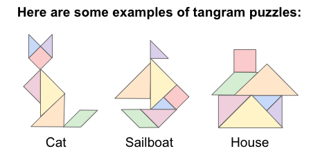

- Durante questa sttimana abbiamo principalmente fatto esercizi di soft skill.
Un gioco che mi ha particolarmente colpito è stato il Tamgram: questo "gioco" ci ha insegnato quanto è importante sapersi spiegare (avere una migliore comunicazione aziendale) e quanto è importante confrontarsi tra colleghi per migliorare la comunicazione. - Abbiamo schematizzato il processo per fare il caffè utilizzando una caffettiera
- Appreso i Tag base e attributi di HTML
